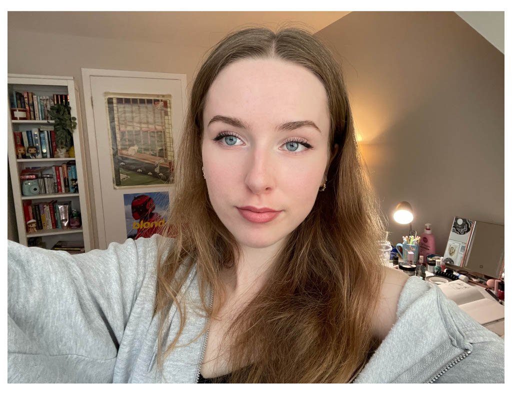

About Me
My name is Sophie Teal. I am a first year Graphic Design student here at Algonquin. Before this I studied visual art at an art school for four years. I’ve always been someone who loves drawing and various other forms of visual art, but it was at that school where my love for anything art or design related really flourished.
Some hobbies of mine include reading, watching movies, listening to music, indulging in nature and of course, creating art. My favourite art forms are pencil drawing and ceramics. I like collecting things like perfumes, jewellery and Lego. I am 100 percent a cat person and have the cutest cat named Fisher. I speak English and French, and am currently trying to learn Hebrew on Duolingo.
"I'm not afraid of storms, for I'm learning how to sail my ship."
- Louisa May Alcott
My Skills
- Art History & Knowledge
- Problem Solving Abilities
- Creative Strategy
- Detail Oriented
- Time Management
Graphic Design Courses
- Concept Sketching
- Typography
- Graphic Design
- Computer Graphics
- Web Design
- Communications for Graphic Design